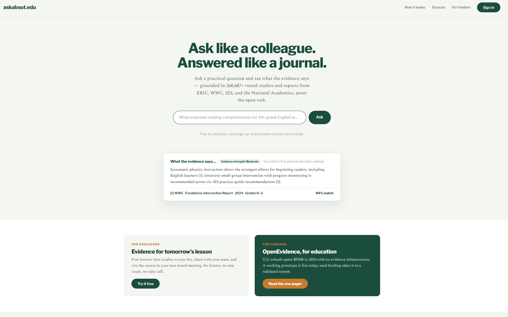

The problem
Education has a persistent research-to-practice gap. A large body of peer-reviewed research is difficult for educators and school leaders to access, interpret, and connect to immediate decisions. Meanwhile, consequential choices about curricula, intervention programs, and professional development are often made without timely, usable evidence.
General-purpose AI systems can make research easier to discuss, but they are not designed to provide a controlled evidence base, a consistent hierarchy of evidence, or transparent judgments about the strength and contextual relevance of the underlying research.
The solution
askabout.edu is an evidence-informed decision-support platform designed for practical education questions. An educator can ask a question such as, “What approaches improve reading comprehension for fourth-grade English learners?” The system retrieves relevant research from a curated corpus and returns a clear synthesis with citations, evidence-strength information, and the contexts in which the findings are grounded.
Rather than searching the open web, AAU is deliberately designed around verified research sources such as ERIC, What Works Clearinghouse materials, IES practice guides, systematic reviews, and National Academies reports.
From question to evidence-informed action
Ask in practical language
Users describe a program, outcome, population, or decision in the language they would use with a colleague rather than constructing a database query.
Retrieve verified evidence
The system searches a curated research corpus and prioritizes stronger forms of evidence, including systematic reviews and meta-analyses, over isolated single studies.
Interpret with context
Responses include transparent citations, an evidence-strength rating, and information about the populations and settings represented in the evidence.
Evidence by design
AAU is being developed around several principles:
- Curated sources: Retrieval is constrained to verified educational research and evidence reports rather than the open web.
- Evidence hierarchy: Research syntheses and higher-quality evidence are prioritized when available.
- Transparent citations: Users can trace claims back to the underlying study or report.
- Calibrated conclusions: Responses distinguish strong, moderate, limited, and inconclusive evidence.
- Contextual grounding: The system surfaces the settings and populations represented in the evidence so users can judge how well it applies locally.
Current status
As of August 2026:
- An early working prototype is live with functioning retrieval pipelines tested against benchmark questions.
- Corpus development includes an ERIC ingestion pipeline spanning more than 2.2 million records; ingestion and evidence verification are still in progress.
- Approximately 10,000 What Works Clearinghouse intervention reports have been incorporated into the project corpus.
- Educational researchers, state education agency partners, and practicing teachers have provided letters of support and expressed readiness to participate in pilot testing.
The number of records available in the live vetted index will continue to change as ingestion, verification, and evaluation progress.
My role and the founding team
I am one of four co-founders of Ask About EDU (AAU). The founding team brings together expertise in AI engineering, educational research, software design, and educational technology.
Because the company is still in formation, this page presents AAU as a co-founded product initiative rather than as a finalized legal entity. Company details will be updated after registration is complete.
Next phase
The team is seeking seed funding to move from an early prototype to a validated system. The next phase will focus on:
- Core engineering and product reliability.
- Corpus expansion, verification, and evidence-ranking workflows.
- Pilot implementation with educators and education partners.
- Rigorous evaluation of usability, evidence quality, and decision-support value.